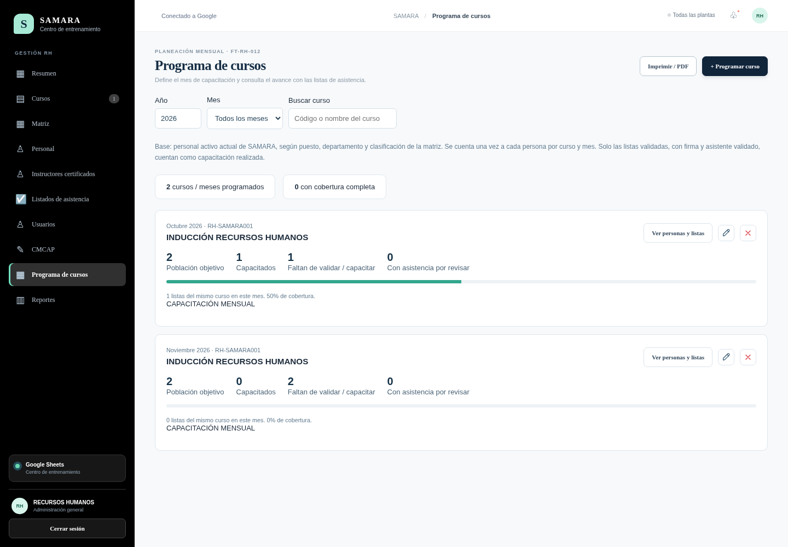

Elige curso, año y meses. La población proviene de los empleados activos de SAMARA y de la matriz por puesto, departamento y clasificación. El avance se calcula con las listas de asistencia del mismo curso y mes, sin duplicar personas.
Consulta capacitados, pendientes y asistencias por revisar. Los cursos de comisión o brigada requieren seleccionar a sus integrantes. No se solicitan fecha ni horario.
